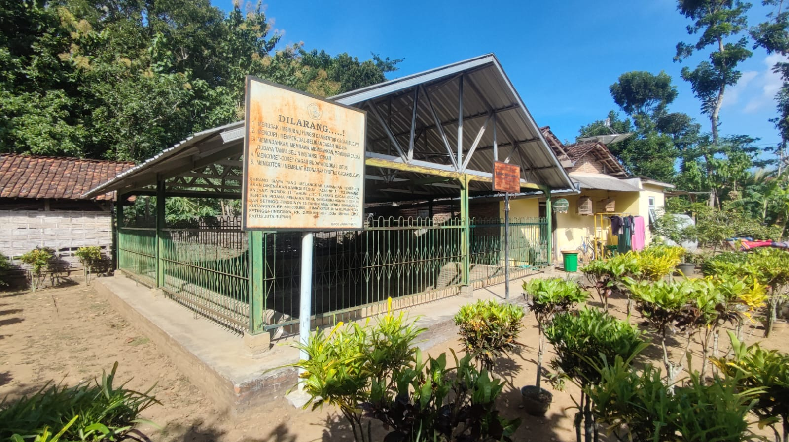

Situs Brongkah, sebuah warisan sejarah yang menarik, terletak di lokasi yang cukup unik, yaitu di dekat rumah salah satu warga Dusun Brongkah Wetan, Desa Kedunglurah, Kecamatan Pogalan, Kabupaten Trenggalek. Secara geografis, candi ini berada pada koordinat 08° 06' 46.15" Lintang Selatan dan 111° 46' 39.82" Bujur Timur, dengan ketinggian 104 meter di atas permukaan laut.
Penemuan Candi Brongkah terjadi secara tidak sengaja pada tahun 1994. Saat itu, pemilik tanah sedang melakukan penggalian untuk membuat sumur ketika tiba-tiba alat penggalian mereka mengenai salah satu permukaan candi. Penemuan ini segera menarik perhatian pihak berwenang, dan selanjutnya penggalian dilakukan oleh tim dari Trowulan.
Berdasarkan relief batu serta peninggalan berupa arca dan lempengan tembaga yang ditemukan di lokasi, para ahli menduga bahwa Candi Brongkah merupakan candi Hindu yang berasal dari masa kejayaan Kerajaan Majapahit. Peninggalan-peninggalan berharga ini kini disimpan dan dipamerkan di Museum Trowulan untuk tujuan preservasi dan studi lebih lanjut.
Candi Brongkah memiliki keunikan tersendiri dalam hal bahan konstruksinya. Tidak seperti banyak candi lain yang terbuat dari batu andesit, candi ini dibangun menggunakan bata. Pemilihan bahan ini sangat masuk akal mengingat lokasi candi yang berdekatan dengan Sungai Ngasinan, yang kaya akan endapan tanah liat, bahan dasar utama pembuatan batu bata. Bata yang digunakan dalam konstruksi candi ini memiliki ukuran yang cukup besar, dengan panjang antara 32-34 cm, lebar 22-26 cm, dan ketebalan 7,5-8 cm. Meskipun tidak terlalu besar, candi ini memiliki dimensi yang cukup signifikan, dengan ukuran dasar 4 x 4 meter, mencakup luas area sekitar 16 meter persegi.
Candi Brongkah memiliki keunikan tersendiri dalam hal bahan konstruksinya. Tidak seperti banyak candi lain yang terbuat dari batu andesit, candi ini dibangun menggunakan bata. Pemilihan bahan ini sangat masuk akal mengingat lokasi candi yang berdekatan dengan Sungai Ngasinan, yang kaya akan endapan tanah liat, bahan dasar utama pembuatan batu bata. Bata yang digunakan dalam konstruksi candi ini memiliki ukuran yang cukup besar, dengan panjang antara 32-34 cm, lebar 22-26 cm, dan ketebalan 7,5-8 cm. Meskipun tidak terlalu besar, candi ini memiliki dimensi yang cukup signifikan, dengan ukuran dasar 4 x 4 meter, mencakup luas area sekitar 16 meter persegi.
Proses transportasi sedimen ini menghasilkan fenomena pengendapan yang signifikan, terutama di zona dataran banjir. Fenomena ini paling terlihat jelas pada bagian dalam tikungan sungai, di mana terbentuk struktur geologis yang dikenal sebagai point bar. Formasi ini dicirikan oleh akumulasi material sedimen yang substansial, menghasilkan lapisan endapan dengan ketebalan yang cukup besar. Inilah yang menjadi penyebab candi ini terkubur 3 meter dibawah tanah. Proses alamiah ini, meskipun telah membantu melestarikan candi dari kerusakan yang disebabkan oleh faktor eksternal, juga menjadi tantangan tersendiri bagi para arkeolog dan konservator dalam upaya penggalian dan pemeliharaan candi.
Sayangnya, meskipun proses sedimentasi telah membantu melestarikan sebagian struktur candi, kondisi Candi Brongkah saat ini tidak utuh. Hanya bagian bawah candi yang tersisa, dan bahkan sebagian batu bata yang membentuk struktur ini sudah mengalami kerusakan atau kehancuran.
Berikut adalah lokasi dari situs Brongkah